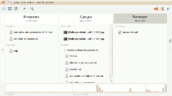
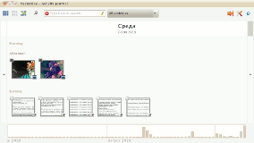
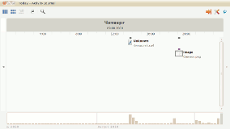
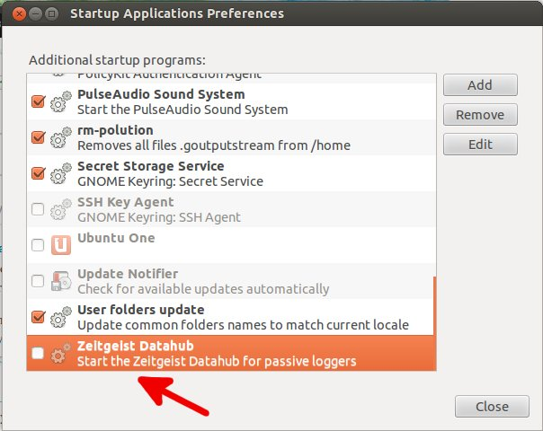
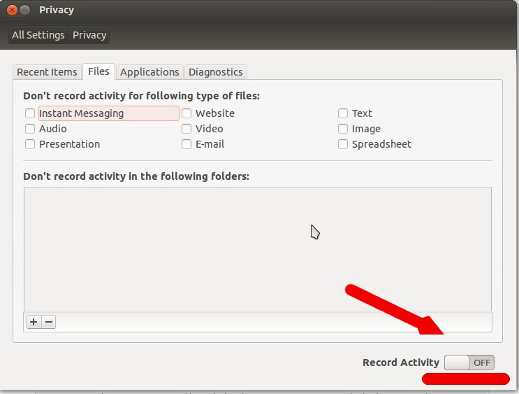

Журнал активности пользователя в Gnome или Zeitgeist в действии
В скором времени ожидается выход Gnome 3, который будет использовать новый интерфейс Gnome Shell и технологию Zeitgeist.
Технология Zeitgeist призвана облегчить жизнь забывчивым пользователям ОС Linux. Zeitgeist регистрирует любую активность пользователя (открываемые файлы, приложения, добавленные контакты, отправленные письма, просмотренные сайты и т.д. ). С ее помощью можно восстановить хронологию активности пользователя и найти легко и быстро любой файл.
Тесная интеграция с новым интерфейсом Gnome позволит гармонично вписать эту систему в новые дистрибутивы Ubuntu. Уже сегодня можно пользоваться этой технологией.
Для облегчения просмотра активности пользователя необходим Activity Journal, который позволяет в удобной форме увидеть все действия, совершенные пользователем.
Скриншоты
  
Описание Activity Journal+Zeitgeist
Сильные стороны Activity Journal+Zeitgeist:
Слабые стороны Activity Journal+Zeitgeist:
Установка
Установить Activity Journal и Zeitgeist в Ubuntu самой последней версии можно из дополнительного репозитория на launchpad.net:
# sudo add-apt-repository ppa:zeitgeist/ppa & sudo apt-get update
# Подключение дополнительного репозитория launchpad.net
# sudo aptitude install gnome-activity-journal
# Установка Activity Journal и Zeitgeist
Если для подключения к Интернету Вы используете proxy-сервер, то подключить дополнительный репозиторий в Ubuntu Вы можете вторым способом.
Спойлер: Второй способ установки Activity Journal
После успешной установки Activity Journal и Zeitgeist требуется перезапустить установленные демоны или перезагрузить компьютер.
Чтобы запустить Activity Journal (журнал активности) нужно воспользоваться ярлыком Приложения→Стандартные→Activity Journal
Все новые модели принтеров Canon от модели к модели становятся все более производительными, а картриджи менее ресурсоемкими. Выйти из положения может помочь система - СНПЧ Canon. Эта система увеличить количество отпечатанных копий и уменьшить денежные расходы на принтер.
Статья опубликована 09.09.2010 · Автор статьи: Зюзгин Иван
Статья относится к linux, софт, ubuntu, gnome, nautilus, безопасность, удобство
Похожие 7 программ:
ОТКЛЮЧЕНИЕ
Zeitgeist - это сервис, который регистрирует действия и события пользователя (файлы
открытые, посещенные веб-сайты, общение с другими людьми и т. д.) и
делает информацию доступной для других приложений.
Ниже приведены шаги, чтобы отключить его и удалить историю.
Вы, вероятно, видели много советов в Интернете, которые говорят вам, чтобы удалить
Zeitgeist упаковывает полностью, однако это приведет к появлению ядра гнома
пакеты также стерты.
На самом деле вам не нужно все удалять. Все, что вам нужно, это замаскировать
Услуги Zeitgeist. Но прежде, это также может быть хорошей идеей, чтобы очистить
Использование данных за все время и прекращение записи.
Для этого запустите «Безопасность и конфиденциальность»
unity-control-center activity-log-manager
Выберите «Все настройки» -> «Безопасность и конфиденциальность» -> «Файлы и приложения».
снимите флажок Запись файла и использование приложения
=====================
Какой дурак
Zeitgeist – это сервис, который регистрирует действия и события пользователей в любом месте от файлов, открытых для посещенных веб-сайтов и разговоров. Он делает эту информацию доступной для других приложений для использования в виде временных графиков и статистики. Он может устанавливать отношения между элементами на основе сходства и шаблонов использования, применяя алгоритмы ассоциации данных, такие как «Вино» и «Приори»,
Zeitgeist является основным двигателем и логикой журнала GNOME Activity Journal, который в настоящее время считается одним из основных средств просмотра и управления действиями в версии GNOME 3.0
Источник: Википедия
Как быстро ее исправить
Поскольку zeitgeist является журналом, он будет расти больше день за днем, что приведет к проблеме завершения работы барана.
Самый простой способ решить это – сделать некоторые чистые, удалив текущий журнал, чтобы позволить новому занять его место. Это не опасно и может быть выполнено с помощью одной командной строки:
rm -r ~/.local/share/zeitgeist/
Или с вашим файловым браузером ( ctrl + h для отображения скрытого файла):
в папке Home (~ /) > .local > share и удалите zeitgeist
После перезагрузки ваше окончание Ram должно вернуться к нормальной работе. Вы можете остаться с этим решением и подождать до следующей проблемы zeitgeist (возможно, через несколько лет) или попробовать одно из следующих решений.
Как отключить его
(без удаления)
Лучше было бы отключить его, а не удалять.
Сначала автоматически запускаются запущенные приложения и истекающий тираж от UN-tick .

Если вы не видите zeitgeist в приложениях запуска, откройте терминал (CTRL + ALT + T) и выполните следующую команду
sudo sed 's/NoDisplay=true/NoDisplay=false/g' -i /etc/xdg/autostart/zeitgeist-datahub.desktop
Отключить запись
Откройте настройки конфиденциальности и отключите запись. 
И последнее, но не менее важное: удалите исполняемые биты, чтобы предотвратить запуск приложения.
С терминала (CTRL + ALT + T)
sudo chmod -x /usr/bin/zeitgeist-daemon sudo chmod -x /usr/bin/zeitgeist-datahub sudo chmod -x /usr/lib/zeitgeist/zeitgeist-fts
zeitgeist-fts может находиться в другом месте от того, что указано здесь. Если вы не можете найти его, выполните следующие команды один за другим, чтобы найти правильный путь.
sudo updatedb locate zeitgeist-fts
Как удалить его
Следующие могут быть опасными и удалить также некоторые важные пакеты для функциональности Dash.
Запустите sudo apt-get remove zeitgeist* в терминале. Он может удалить несколько связанных пакетов, но пока вы не видите ничего предлагаемого для удаления, которое вам не нужно, вы должны быть в порядке.
В соответствии с комментариями: вы потеряете единство функциональности (я не был уверен, как много, когда я впервые написал ответ), если вы удалите zeitgeist. Поэтому я предлагаю вам отключить ведение журнала.
Если вам не нужно единство, чтобы функционировать правильно, вы можете продолжить и удалить zeitgeist и просто использовать классический сеанс (с экрана входа в систему).
Вы также можете занести в черный список все или вообще отключить ведение журнала.
Источник: AskUbuntu
Бывают случаи, когда zeitgeist-fts начинает действовать действительно странно. Проблема очень неустойчивая и не очень легко воспроизводимая время от времени.
Одним из способов является удаление каталога fts.index
rm -rf ~/.local/share/zeitgeist/fts.index/
то он попытается переиндексировать его. Я думаю, что высокое потребление памяти связано с нарушением индекса. Удаление индекса заставит zeitgeist-fts попытаться снова его переиндексировать.
После отключения записи активности (как объясняется @NikTh) удалите данные zeitgeist:
rm -rf ~/.local/share/zeitgeist/
Эта папка будет воссоздана при следующей перезагрузке с пустыми данными, а процесс zeitgeist не займет столько памяти.
Надежно удалите данные в ~/.local/share/zeitgeist
$ find ~/.local/share/zeitgeist/ -type f -exec shred -uvz '{}' \;
Теперь вы можете отключить услуги Zeitgeist
$ systemctl --user list-unit-files |grep -i zeitgeist zeitgeist-fts.service static zeitgeist.service static $ for i in zeitgeist-fts zeitgeist; do systemctl --user disable $i systemctl --user stop $i systemctl --user mask $i done $ sudo apt-get purge zeitgeist-datahub $ zeitgeist-daemon --quit